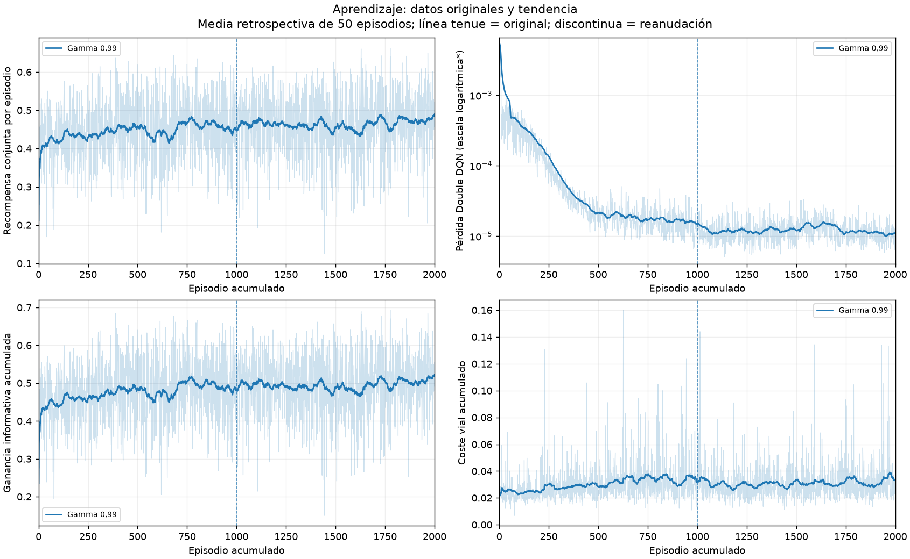
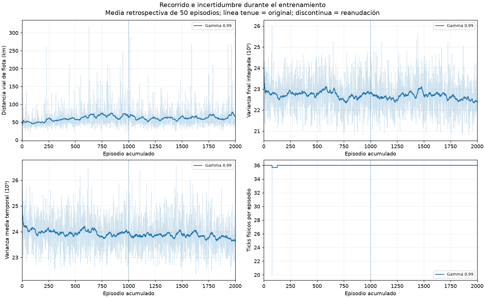
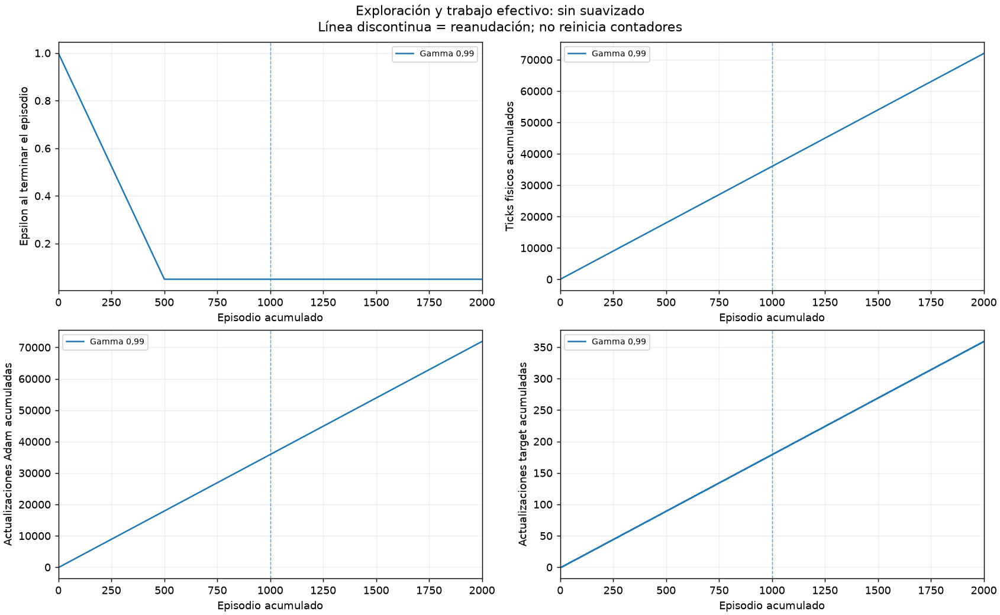
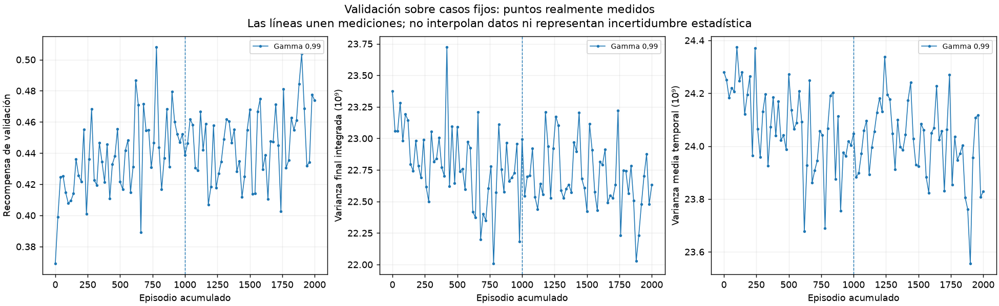

Evolución durante la misión y calidad frente al recorrido
Final 1000

Final 2000

La curva de entrenamiento mezcla escenarios distintos y exploración; la validación usa los mismos casos. Una pérdida menor no implica una política mejor, y pérdidas/Q con distinto gamma no tienen la misma escala objetivo. *La pérdida usa escala logarítmica, lineal cerca de cero (±10⁻⁸), sin ocultar ceros. El suavizado es retrospectivo, usa solo valores disponibles y conserva los datos originales; no es un intervalo de confianza. Las líneas de reanudación marcan continuidad del mismo entrenamiento, no una semilla nueva. Una meseta visual no prueba convergencia. Comparar también focos, errores y recorrido, incluyendo deterioros. Son escenarios sintéticos y una semilla por brazo; no demuestran desempeño físico ni beneficio sanitario. El replay histórico final sigue pendiente y no se usa aquí.
| Ejecución | Gamma | Episodios | Objetivo declarado | Ticks | Adam | Acciones inválidas | Reanudaciones |
|---|---|---|---|---|---|---|---|
| Gamma 0,99 | 0.99 | 2000 | 2000 | 71984 | 71876 | 0 | 1000 |




No confundir medias de entrenamiento con validación. Tabla completa CSV.
| Ejecución | Desde | Hasta | Recompensa entrenamiento | Pérdida | Varianza final validación | Validaciones | Recorrido entrenamiento (m) |
|---|---|---|---|---|---|---|---|
| Gamma 0,99 | 1 | 200 | 0.4282 | 0.0004319 | 2.3e+10 | 10 | 4.917e+04 |
| Gamma 0,99 | 201 | 400 | 0.443 | 7.307e-05 | 2.28e+10 | 10 | 5.729e+04 |
| Gamma 0,99 | 401 | 600 | 0.445 | 2.189e-05 | 2.292e+10 | 10 | 6.061e+04 |
| Gamma 0,99 | 601 | 800 | 0.4549 | 1.799e-05 | 2.249e+10 | 10 | 6.912e+04 |
| Gamma 0,99 | 801 | 1000 | 0.4578 | 1.599e-05 | 2.276e+10 | 10 | 6.701e+04 |
| Gamma 0,99 | 1001 | 1200 | 0.4655 | 1.185e-05 | 2.272e+10 | 10 | 6.103e+04 |
| Gamma 0,99 | 1201 | 1400 | 0.4608 | 1.197e-05 | 2.276e+10 | 10 | 6.046e+04 |
| Gamma 0,99 | 1401 | 1600 | 0.4521 | 1.31e-05 | 2.277e+10 | 10 | 6.138e+04 |
| Gamma 0,99 | 1601 | 1800 | 0.4652 | 1.285e-05 | 2.268e+10 | 10 | 6.367e+04 |
| Gamma 0,99 | 1801 | 2000 | 0.4769 | 1.109e-05 | 2.253e+10 | 10 | 6.345e+04 |
Umbral experimental: 24.555473 µg/m³. No es sanitario.

| Política | RMSE final | Déficit temporal | Sensibilidad (fracción) | Falsa área (km²) | Recorrido (m) | Eventos completados omitidos (fracción) |
|---|---|---|---|---|---|---|
| Final 1000 | 5.4 | 9.069 | 0.1356 | 4.267 | 8.378e+04 | 0.8209 |
| Final 2000 | 5.096 | 9.315 | 0.1116 | 2.727 | 6.614e+04 | 0.8651 |
| Solo fijas | 5.536 | 9.824 | 0.05869 | 1.739 | 0 | 0.9631 |
| Aleatoria | 5.312 | 9.155 | 0.126 | 2.963 | 4.93e+04 | 0.9264 |
| Greedy | 5.04 | 9.185 | 0.1235 | 2.388 | 8.405e+04 | 0.9348 |
| Barrido | 5.234 | 9.146 | 0.1316 | 2.624 | 4.526e+04 | 0.92 |

| Política | Referencia | Meta (%) | Reducción varianza (%) | Reducción RMSE (%) | Reducción recorrido (%) |
|---|---|---|---|---|---|
| Final 1000 | fixed | 20 | 13.13 | 2.449 | — |
| Final 1000 | random | 20 | -0.7772 | -1.662 | -69.94 |
| Final 1000 | greedy | 20 | -3.69 | -7.158 | 0.331 |
| Final 1000 | sweep | 20 | 1.173 | -3.183 | -85.1 |
| Final 2000 | fixed | 20 | 14.49 | 7.955 | — |
| Final 2000 | random | 20 | 0.8064 | 4.077 | -34.17 |
| Final 2000 | greedy | 20 | -2.061 | -1.109 | 21.31 |
| Final 2000 | sweep | 20 | 2.725 | 2.642 | -46.14 |
Porcentajes calculados después de agregar las métricas. Reducir recorrido un 20 % no equivale a cumplir el indicador general. Las falsas alarmas deben acompañar sensibilidad y déficit. El retraso solo entre detectados no resume los eventos omitidos o censurados.
Tabla completa CSV · Referencias CSV · Figura SVG


Gamma 0,5: entrenamiento solicitado a 2000 episodios; resultados todavía no incorporados. El contraste de descuentos se completará con políticas finales al mismo presupuesto. El replay histórico final es una evaluación separada y pendiente.